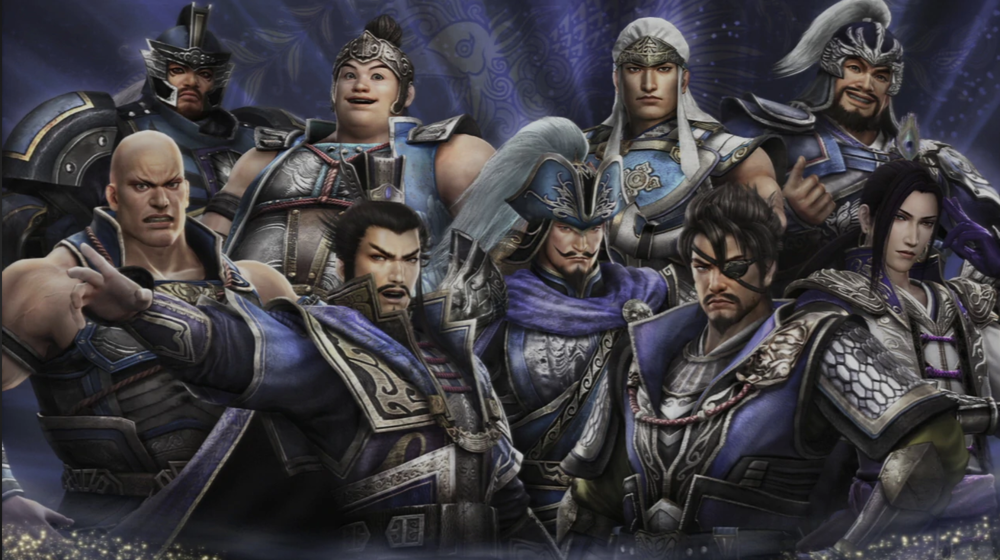
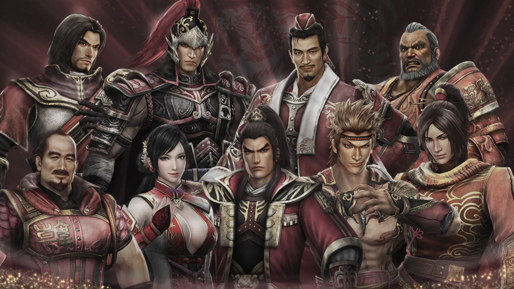
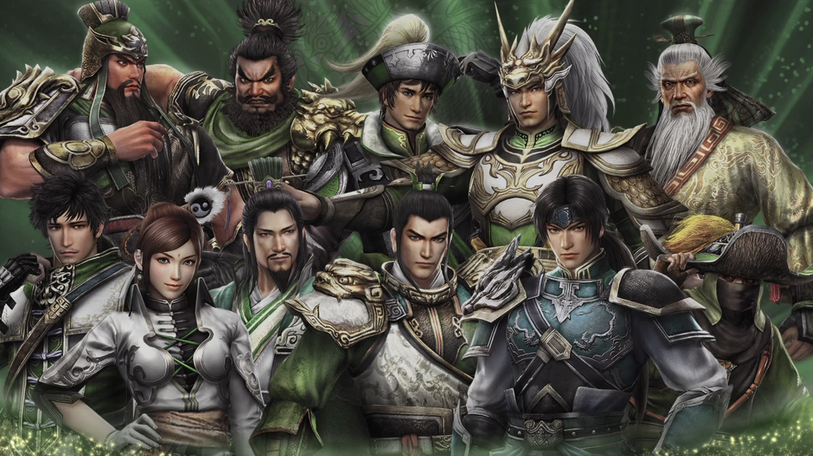

Wei
The Wei Kingdom was lead by Cao Cao. He was called the "Hero of Chaos". He was a fierce leader. Sometimes his punishments was merciless and irrational.
Wu
The Wu Kingdom was lead by Sun Jian. He had three sons and one daughter. He was called the "Tiger of Jong Dong". No one knows how he was built. He was uncanny in his skills and battle techniques.
Shu
The Shu Kingdom is lead by Liu Bei. It started off with a sworn brotherhood oath between three warriors: Guan Yu, Liu Bei, and Zhang Fei. Liu Bei's mission was to bring peace and harmony to the land.